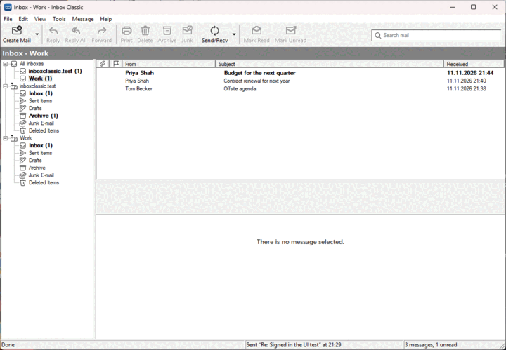

Totes les safates d’entrada
Amb dos comptes o més, llegiu el correu de totes les safates d’entrada en una sola llista, o la Safata d’entrada d’un compte cada vegada.
La visualització Totes les safates d’entrada és a dalt de tot de la llista de carpetes quan teniu dos comptes o més. Reuneix el correu de la Safata d’entrada de tots els comptes, per defecte del més nou al més antic. La columna Compte indica el compte de cada missatge.

- Les ordres per respondre, reenviar, moure i suprimir actuen sobre el missatge al compte d’origen.
- Els missatges nous es redacten des del compte del missatge seleccionat.
- L’ordre Marca-ho tot com a llegit a Totes les safates d’entrada marca com a llegits tots els missatges de les safates d’entrada. És l’única ordre del seu menú contextual, perquè aquesta visualització reuneix carpetes de diversos comptes.
La Safata d’entrada de cada compte
Sota Totes les safates d’entrada, la Safata d’entrada de cada compte té una fila pròpia, amb el nom del compte i el nombre de missatges no llegits. Seleccioneu una fila per veure només aquella Safata d’entrada. Les safates d’entrada es troben aquí. Sota els noms dels comptes, més avall, hi ha la resta de carpetes, sense repetir la Safata d’entrada, Elements enviats ni Esborranys.
Les files segueixen l’ordre dels vostres comptes. Per canviar l’ordre, arrossegueu una fila per sobre o per sota d’una altra. Vegeu Canviar, ordenar i suprimir comptes.
La llista de carpetes recorda si heu desplegat o plegat Totes les safates d’entrada. Desapareix quan només queda un compte.
Missatges enviats i esborranys de tots els comptes
Les visualitzacions Tots els missatges enviats i Tots els esborranys segueixen Totes les safates d’entrada. Reuneixen, respectivament, els missatges enviats i els esborranys de tots els comptes, amb la columna Compte i els destinataris de cada missatge. Desplegueu una visualització amb la fletxa per mostrar una fila per compte i veure només els Elements enviats o els Esborranys d’un compte. Aquestes dues carpetes no es repeteixen sota els noms dels comptes més avall.
Un esborrany obert des de Tots els esborranys fa servir el compte on es va desar. Inicialment, aquestes dues visualitzacions estan plegades. Inbox Classic conserva l’estat plegat o desplegat que trieu.